|
今回のサイパン(Northern Mariana)からの運用は、
10月1日から3日までマリアナリゾートホテルのフインハウス(ログハウス)から行いました。
ここは、昨年の夏にマリアナリゾートホテルと八重洲無線の協力でオープンしたアマチュア無線の"レンタル・シャック"。
今回は機器の使用状況の"点検と視察"のための訪問...と言うのは名目でもちろん目的は"6mの運用"。 10月1日の03:00LMT(現地時間=時差1時間+)過ぎにホテルに到着、休む間もなく機器の点検、設置。 朝方のヨーロッパとのQSOを目指し、簡単なHFローバンド用のアンテナの建設に取りかかる。 昨年の開設当時に比べると機材も豊富(特にアンテナ関係)に揃えられていて、選ぶのに戸惑う？。 東の空が明るくなる前に機器の設置もほぼ終了、ダイポール系アンテナで電波も出せる状態になった。 八木系のアンテナは部品の数も多く手元の暗い"夜間"は避けて明るくなってから工事することにして、 ひとまず休憩することに。 昼の作業は日差しが強いので"つらい"が、組み立ての終わっているローテーター付きのルーフタワー(4.5mH)を物置場から持ってくるだけなので、 タワー建設の作業は簡単。 タワーには、八木系の50MHzの4エレ、HF(14/21/28MHz帯)の2エレのHB9CVを取り付けた。 高さやエレメントの数などに不満は残るものの、運用者が直接「建設」「撤去」の作業を行う事が、 このレンタルシャックを借りる際の条件なので2、3人で移動運用する工事としては手頃な作業量かも知れない。 工事に手間取って運用時間がなくなるよりはこの方が良い。 ここは高台なので簡単なアンテナでも電波の飛びは抜群なのだ！。
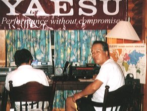 Saipanから運用するKH2K/AH0(JA1RJU)とKH0/JN1WTK(左)
アンテナ
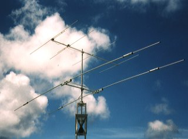 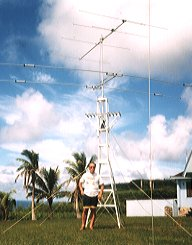 タワーの上には、50MHz/4EL & 14-28MHz/2EL HB9CVのビームアンテナ
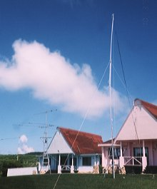 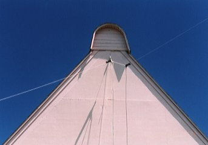 建物の軒先に新たに"滑車"を取り付けた
現在、用意されている50MHzのアンテナは4エレのHB9CVだけだが、近日中に6エレが追加される予定。 HF帯のアンテナは日本製のマルチバンドのバーチカルと水平ダイポールが用意されているが、 高電力に耐えられない200W程度ものなので、大電力用には各バンドのツェップ型(サガ電子製)のアンテナが用意されている。 このアンテナは高電力(SSB・1KW、CW・500W)にも耐えられるタイプなのでリニアー使用時にも安心。 ただ、モノバンドなのでクイックQSYは出来ない。 一つのバンドでジックリQSOしたい人向き。 マルチバンダーに便利なクッシュクラフトのR7000クラスのバーチカルが今後備えられる予定。 今回、ワイヤーアンテナなどを手軽に上げることが出来る様に建物の軒下にフックで滑車を取り付けてもらった。 ワイヤーで簡単にアンテナの交換が出来るので便利になった。
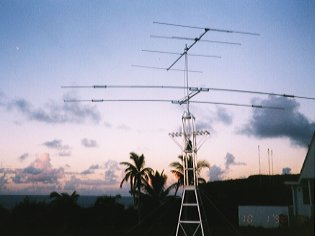 夕方になるとJAが聞こえてくる(アンテナはJA方向)
今回はワイヤーアンテナの「G5RV」(MFJ-1778)を持参したが、これは意外に良く働いてくれた。
10m以上のマストが用意出来れば、一本の同軸で80mから10mまで無調整で使える"優れもの"。
ただし、無調整と言ってもアンテナチューナーは必要。
収縮ポールがレンタルシャックに備えられているのでこれをつなぎ合わせて10m以上のポールを建てることも出来る。
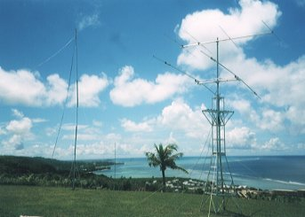 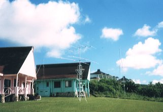
JA4からのゲスト 10月2日の午後からJA4から4人が来島。 マリアナリゾートホテルのフインハウス(ログハウス)は6人用と4人用があり、 今回は6人用だったので余裕の"生活"だった。 冷房完備、冷蔵庫付きのキッチン、バス、トイレ付きのこのハウスはベッドルームも個室になっているので、 深夜に無線をしていても寝ている人に邪魔にはならない造り。 せっかくここまで無線をやりに来て早々と寝てしまう人なんていないだろうと思ったのだが、 今回の夜は人数の割には静かだった？。 寝ていた人が多かったのかも...！？。
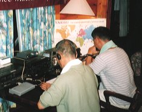 オペレートするKH0/JA4KFA(右)とKH0/JH4RLY /RTTYを運用中のKH0/JA4RED
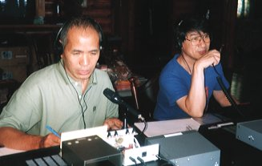 オペレートしているKH0/JH4RLYとAA1NY/KH0(右)
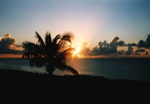 Saipanの夕日 運用場所のフインハウスの窓越に眺められる
|